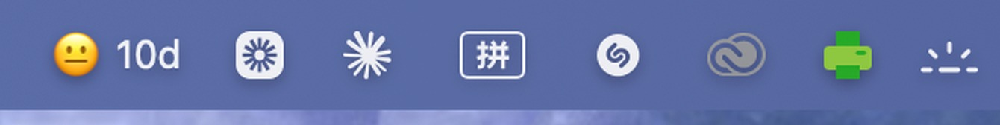

I take products from a research finding to something shipped. Health, AI, and the screens in cars.
Not sure where to start? Click the dice and it picks a project. Or scroll — they are all below.
I am a product designer and a researcher, based in London. I did a double master's in Innovation Design Engineering at Imperial College London and the Royal College of Art. I like problems that need science and people at the same time. Right now I am building Urify. It is a health product, and Imperial College London is incubating it.
AI spends most of its time adding. The taste for taking things away has to stay with a person. Everyone has the same tools now, so anything involving a person I still do by hand, and AI does the extracting, cross-checking, generating and testing around it. I wrote down the whole loop, and what building this way taught me about how much a system should decide on its own.
I also build software for myself. I use AI to help me write the code. These are not case studies. They are small tools I use every day. I will add more here as I make them.
I work alone on urgent things a lot. When I do, I get absorbed and forget the rest. I forget food. I forget sleep. I forget people. So I built MoodGuard. It is a widget, and it sits on the desktop next to the stock ones. It tracks the things that recharge me. You pick your own list. Each activity gets one pill, and you tap a pill to fill it in. A big number counts the days since the last one. Go 14 days with no real recharge and it warns you. Then you can do something before a low mood lands. It is free, and you can change all of it.



Mostly heads-down on weaving AI into everyday life: not chatbots bolted onto things, but small, specific tools that remove real friction. Some ship as client work, some are just for me, like the MoodGuard widget above. Also building Urify and designing at 1Soul.
Open to product design roles and collaborations in London and remotely.